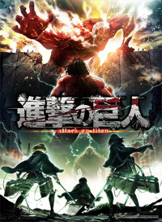

Shingeki no Kyojin (Attack on Titan): Em um mundo onde a humanidade vive dentro de muralhas gigantes para se proteger dos Titãs, criaturas enormes que devoram humanos, Eren Yeager e seus amigos se juntam à força militar para lutar contra esses monstros. A história revela mistérios sombrios sobre a origem dos Titãs e o verdadeiro propósito da luta pela sobrevivência dahumanidade.
|  | Este é a capa do primeiro volume do mangá. |